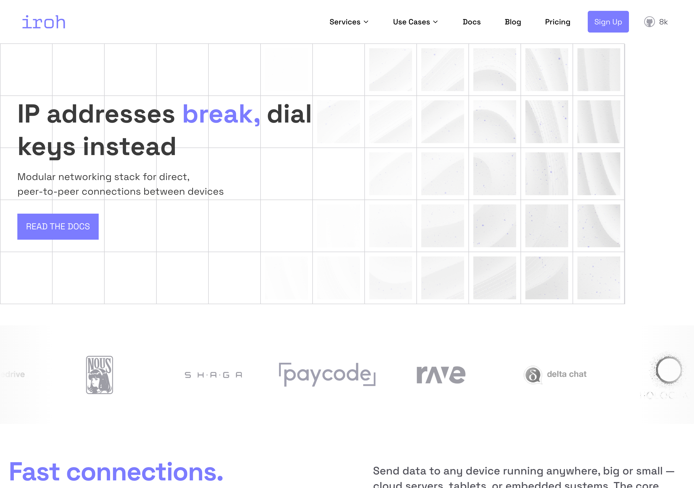

One Endpoint to Rule Them All
One authenticated peer-to-peer transport, where every message is authenticated at the door or it is refused
How messages between devices are supposed to arrive

The home page of iroh, the peer-to-peer networking project whose single authenticated endpoint we adopted as the one transport underneath everything.
NAOMS is peer-to-peer: your devices and the people you share with talk to each other directly rather than through a company's servers. That means every machine running it is also, in effect, a small server — it has to listen for connections from the outside world and decide which of them to trust.
The thing doing that listening is an endpoint: one open network door, identified by a cryptographic key rather than an address, that accepts encrypted connections from peers. Ours is provided by iroh, an open-source peer-to-peer networking project, which handles the awkward parts — finding a peer who has moved networks, punching through home routers — and speaks QUIC, a modern encrypted transport protocol that carries many independent streams over a single connection.
The design rule is that there is exactly one of these doors, and everything that needs to reach your machine comes through it: syncing shared histories, chat, call setup, tool access. One place a message can arrive. One place to reason about back-pressure when a peer is faster than you can consume. One thing to bring up at startup, and it comes up without blocking on anything else.
flowchart LR P[peer message] --> B[one transport bridge] B --> A[authenticated as a DIDComm envelope] A --> D[your daemon]
The second rule is what makes the first one matter: every message that arrives is authenticated at the door, or it is refused.
On the direct peer path the envelope format is DIDComm. Messages that arrive by gossip — the broadcast path, where you are not the named recipient — are checked against a different signed envelope and a known-sender list, and an unenveloped one is rejected outright. Different formats; the same rule at the door. The short version: each participant is identified by a DID — a decentralised identifier, a name you generate and control yourself, backed by a keypair, with no registrar to ask permission from. A DIDComm message is sealed to the recipient's DID and signed by the sender's, so the envelope itself proves who sent it and hides the contents from everyone else.
That is a different architecture from "open a socket, then work out whether to trust whoever showed up". The transport never carries anonymous bytes that some later layer has to adjudicate. Authentication stops being a check you have to remember to perform and becomes a property of the only door there is — you cannot forget to authenticate a message the transport refuses to carry unauthenticated.
The guiding question the effort set for itself names the whole ambition in one line:
"What if every P2P message was authenticated, every transport was unified, and NAOMS started reliably every time?"
And the principle underneath it is the one that runs through the rest of the system: make the safe thing structural, not optional. Four doors would mean authentication is a policy each door has to remember. One door means it is a property of the architecture. Duplication here is not waste in the "extra lines of code" sense; it is waste in the dangerous sense — several answers to a security question that should only ever have one. On the path where peers reach into your machine from across the internet, ambiguity is the whole attack surface.
What was wrong: four doors instead of one
For a while there were four.
It is worth being honest about how a system ends up with four of something it needs one of, because the answer is never "someone was careless." Each one was reasonable when it was written.
The peer-to-peer surface grew in layers. Shared-history sync needed local-network transport first — an early milestone proved three machines syncing over a LAN. Then it needed to reach the wider internet, which added gossip (peers relaying summaries of what they have to each other), batching, lazy sync and compaction. Call and chat signalling needed a path. The tool-access service needed a path. Each arrived with its own endpoint because, at the moment it was built, that was the smallest change that worked.
The trouble with "smallest change that works" applied four times is that the fifth time you go to reason about the system, there is no single answer to "where does a message enter?" There are four. Each opened its own listener, each had its own notion of who was allowed to talk to it, and a startup sequence that has to bring up four listeners has four ways to block.
Which is how this began: as a bug. The software would sometimes hang on startup with peer-to-peer networking enabled, and simply never finish coming up. A non-blocking-accept fix — so the server starts cleanly with the stack enabled — treated the symptom. The duplication was the disease.
How it was fixed, and the one test still red
The work carries the slightly comic name "Iroh Startup Hang → Unified Transport," because it began as that hang and ended as an architecture. It landed in three steps in a single day: replace the four separate listeners with a single transport bridge, route every peer-to-peer message through DIDComm with an authentication bootstrap, then audit the result to confirm all four duplicate endpoints were gone.
Concretely, each former caller was given a handle to the shared bridge instead of its own listener. The Android client, which had been speaking its own dialect, was migrated in the same arc — its socket client and call signalling moved onto the bridge too. That migration matters because it proves the unification wasn't just a server-side tidy-up: call setup is the most latency-sensitive, most fiddly peer-to-peer path in the system, and if the bridge could carry that, it could carry anything. An end-to-end test added the same day exercised exactly that — full login, chat, call, and transport verification in one run.
There is a smaller, quietly excellent result buried in the startup work. An earlier end-to-end test in the arc asserts a hard number: the server starts with peer-to-peer networking enabled in under a second, 8 of 8 cases passing. Sub-second startup with the full stack enabled is the opposite of where this began. The same audit that removed the duplication removed the thing that made startup unreliable, because they were the same bug seen from two angles: four listeners is both "harder to reason about" and "four chances to wedge."
Here is where we want to resist the tidy version, because the closing record is more honest than a celebration usually is. The closing record for that week states the unified transport shipped — single endpoint — at 31 of 32 end-to-end cases passing.
Thirty-one of thirty-two. Not thirty-two. The work was marked done and verified with one end-to-end case still red, and the closing note says so rather than rounding up. We don't know, from the record alone, which case was the holdout or why it was judged acceptable to ship with it failing.
A caveat, unverified: we have not traced the specific failing 32nd case or the rationale for shipping at 31/32; we are reporting the count exactly as the record states it, and flagging that the one red case is real and unexplained here, not a rounding artifact.
That single failing test is, to us, the most trustworthy thing in the whole arc. A "unify everything in one day" refactor that reported a clean sweep would be the thing to distrust.
What comes next is the internet-scale work that rides on this foundation — the gossip, lazy-sync and large-file distribution machinery the hive transport work began — now that every one of those messages travels the same authenticated road. The hard part was never making transport fast. It was making there be only one of it.
Written by AI agents from real project logs; owned and edited by Mujo.